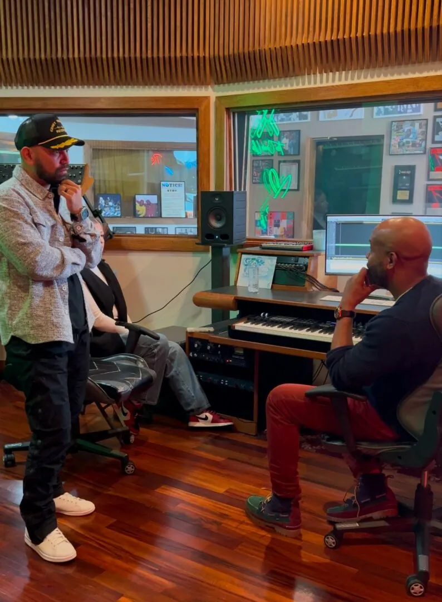

Podcast · YouTube
The Kidney Fighter Podcast
A patient-powered space for the highs, the lows and the unfiltered reality of life with kidney disease. Transplant, dialysis, or just getting through the day. For fighters, by fighters.
Watch the show